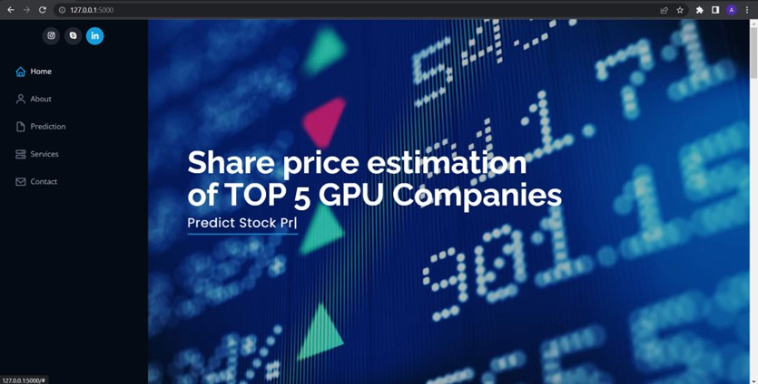
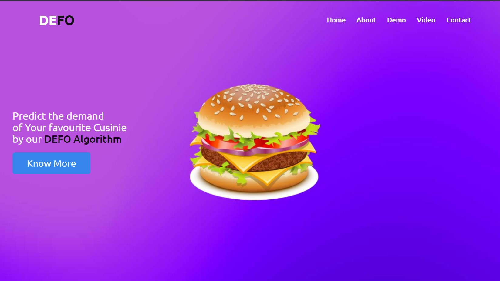
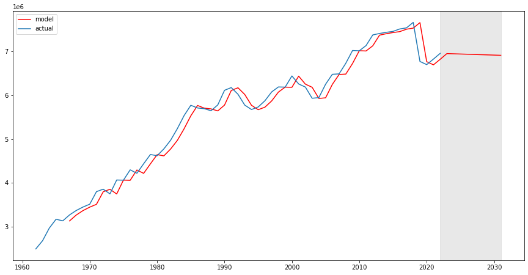

I build production agentic AI systems that land directly in live clinical workflows — the kind where output reliability, clinical grounding, and safety aren’t optional.
Currently an engineer on the core agentic AI platform at SmarterDx, architecting LangGraph clinical agents (SmarterNotes & SmarterUtilization) and DAG-orchestrated chart enrichment pipelines that turn full EHR records into evidence-backed clinical notes and medical-necessity justifications.
Specialized in multi-model AWS Bedrock infrastructure with model parallelism, custom Model Context Protocol (MCP) tooling for AI coding agents, and automated LLM-as-judge evaluation frameworks.
[02] RUNTIME TELEMETRY & KPIS
// PROVABLE_PRODUCTION_IMPACT[03] CYBERWARE & SKILL TREE
// NEURAL_IMPLANTS_&_STACK[04] MISSION LOG & CONTRACTS
// CAREER_TIMELINE- SmarterNotes – Core Agentic AI Engineer: Built LangGraph agents for the EHR-embedded product that generates clinically robust notes from the H&P through the discharge summary, reasoning over the patient's full history, labs, medications, vitals, and flowsheets to draft complete, compliant patient stories and surface evidence-backed diagnosis suggestions.
- SmarterUtilization – Core Agentic AI Engineer: Built agents that surface relevant clinical evidence at the point of care to justify medical necessity and level-of-care decisions, matching patient details against clinical guidelines and inpatient criteria.
- DAG Pre-Generation Pipelines: Designed DAG-based chart assembly pipelines extracting, structuring, and indexing clinical evidence ahead of generation — enabling LangGraph agents to run in real time with grounded outputs citing specific labs, notes, and vitals.
- Clinical Guardrails: Partnered with clinicians, CDI specialists, and utilization reviewers to define clinical analysis logic, translating chart-review feedback into agent nodes, tools, prompts, and safety guardrails.
- Agent Evaluation Framework: Built scalable evaluation benchmarking with multi-metric analysis (semantic similarity, LLM-as-judge scoring, response length), cutting manual prompt-optimization workload by 60%.
- Airflow & OpenSearch: Optimized Airflow DAGs integrating OpenSearch and LLM pipelines for CDI query generation, cutting workflow execution time by 30% across 5+ client applications.
- AWS Bedrock Infrastructure: Architected multi-modal GenAI applications with model parallelism, integrated candidate fallback models, and reduced real-time inference latency by 50%.
- Custom MCP Tool Connectors: Created custom Model Context Protocol (MCP) connectors for AI coding tools including Claude Code and Codex, accelerating developer agent workflows.
- HL7 FHIR Patient Simulation Framework: Revamped Python-based patient data simulation framework using LLMs to generate realistic HL7 FHIR datasets for NIH-funded cancer research, enabling rapid, reproducible test data across clinical studies.
- Pieces in Your Pocket Guardrails: Designed safety and workflow guardrails for conversational AI, enabling EHR updates and instant answers to clinical questions while streamlining after-hours documentation.
- AWS Bedrock Optimization: Architected and deployed multi-modal GenAI applications using AWS Bedrock with model parallelism, achieving a 50% reduction in inference latency.
- LLM Applications & Fine-Tuning: Built LLM applications with Hugging Face, GPT-3.5, and LangChain; fine-tuned transformers (BERT, GPT variants), improving contextual accuracy by 25%.
- GolfGPT Computer Vision: Built golf posture estimation features using MediaPipe pose keypoint detection and joint-angle analysis to deliver real-time swing feedback.
- Neo Legal AI: Designed and prototyped a Retrieval-Augmented Generation (RAG) agent for legal document indexing, semantic search, and contract analysis, reducing manual legal research work by 40%.
- FastAPI & Docker: Constructed robust RESTful APIs using Flask, FastAPI, and Docker on AWS/Azure, improving data exchange efficiency by 25%.
- Developed machine learning models and interactive Tableau dashboards that boosted course sales by 20% and improved business profitability by 30%.
- Led advanced ML bootcamps for 80+ learners covering Python, SQL, and deep learning architectures with hands-on industry tools.
[05] CYBER SHARDS & ARCHITECTURE
// WEAPONS_OF_CODE // AGENTIC_AI
// AGENTIC_AI
Agentic Virtual Travel Assistant
LangGraph-based Deep Agent planning multi-day travel itineraries via live web sources (flight APIs, hotels, events) with streaming and LiveKit voice-to-voice interaction.

// AUTOMATION_BOTOpenClaw Marketing Bot
Autonomous marketing automation agent leveraging LLMs on Google Cloud to streamline cold emails, lead enrichment, scheduling, and personalized outreach for the CMO.

// HEALTHCARE_MLAtrial Fibrillation Detection
Predictive analytics solution boosting early diagnosis accuracy by 15%. Trained CuDA ML GPU-accelerated models, slashing training time by 400% (13h → 13min) with 95% accuracy.
 // COMPUTER_VISION
// COMPUTER_VISION
Biometric Attendance API
Real-time face recognition attendance system built on FaceNet, MTCNN, and FastAPI. Integrated into Raspberry Pi 3 hardware, achieving a 50% performance efficiency boost.
 // SPATIAL_AI
// SPATIAL_AI
GolfGPT Posture Coach
Computer vision swing analysis system using MediaPipe pose keypoint tracking and geometric joint-angle calculation to deliver real-time personalized posture corrections.

// RAG_SYSTEMNeo Legal AI Intelligence
RAG platform for legal document semantic indexing, clause extraction, and contract summarization, reducing manual research time by 40% for early enterprise legal adopters.
[06] ACADEMIA & VERIFIED PERKS
// CREDENTIALS_&_AWARDSM.S. in IT & Management
GPA: 3.58 | Dean's Excellence Scholarship Recipient | Graduate Student Assembly Student Representative. Focus: AI, Advanced Statistics, Database Warehousing.
B.Tech in Computer Science
GPA: 3.5 | 2022 Interdisciplinary Project Expo Winner | Secured seed funding for 2 startup initiatives. Focus: Machine Learning, Data Structures, AI.
Six Sigma Yellow Belt
Certified in operational rigor, lean pipeline operations, root-cause diagnostics, and defect reduction in software pipelines.
AWS Machine Learning Foundations
Cloud machine learning pipelines, SageMaker, deep learning workflows, and distributed model deployment on AWS.